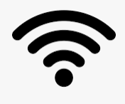

information

크래킹이란?
다른 누군가의 컴퓨터 시스템 또는 웹과 같은 사이트와 네트워크를 정당한 접근 권한 없이 접속하여 훼손하거나 정보를 빼내는 것과 같은 불법 행위를 크래킹이라 합니다.
크래킹의 종류
- DDOS: 악성코드를 삽입하여 감염시킨 좀비 PC를 활용하여 다수의 분산된 컴퓨터를 이용하여 특정 서버 컴퓨터가 처리할 수 있는 용량을 초과하는 정보를 한꺼번에 보내 과부하로 서버가 다운되거나 정상 접속되지 못하도록 만드는 공격
- SQL Injection: 코드 인젝션의 한 기법으로, 클라이언트의 입력값을 조작하여 서버의 데이터베이스를 공격할 수 있는 공격 기술
- Web Shell Upload: 파일 업로드 취약점 파일업로드 기능을 이용하여 시스템 명령어를 실행할 수 있는 웹 프로그램(웹셀)을 업로드할 수 있는 취약점
- Malware distribution: 일반 PC 사용자들의 컴퓨터를 악성코드에 감염시키는 방법으로 웹 하드나 특정 이슈가 되는 사이트 등 사용자를 유도하여 악성코드를 다운받게 하는 경우
malwares type
Case
유명 여배우들의 아이클라우드 계정이 해킹돼 이들이 올렸던 누드사진이 유출된 것으로 나타났다. 해커는 4chan에 제니퍼 로렌스가 직접 찍은 누드사진, 셀프카메라 사진 60여 장과 함께 케이트 업튼, 빅토리아 저스티스, 킴 카다시안, 메리 케이트 올슨 등에 대한 유출 사진을 갖고 있다며 수십 명에 달하는 여배우 리스트를 올렸다. 이 해커는 사진을 일반인들에게 공개하는 대가로 비트코인을 지불해 달라고 요구했다.

아이클라우드 해킹
체르노빌 바이러스는 1999년 4월 26일 발생한 국가적 차원의 컴퓨터 바이러스 대란이었다. 개발자인 대만 출신의 대학생 프로그래머 첸잉후오의 이름 첫 글자를 딴 CH 바이러스는 전국적으로 110만 대 이상의 PC를 못쓰게 만들었다. CH 바이러스는 마이크로소프트 원도우에 감염되는 컴퓨터 바이러스로, 체르노빌 또는 스페이스필러 바이러스로도 불렸다. '체르노빌 바이러스'라는 이름은 이 바이러스가 활동하는 날짜인 4월 26일이 구 소련에서 체르노빌 원자력 발전소 사고가 일어난 날짜와 우연히 일치했기 때문이다. CH 바이러스는 PC의 바이오스를 파괴하여 시동 자체를 불가능하게 만들었다. 소프트웨어로 바이오스 정보를 바꿀 수 있는 PC의 약점을 이용한 것이다.

체르노빌 바이러스
7.7 대란은 2009년 7월 7일 청와대, 국회, 국방부, 외교통상부, 한나라당, 조선일보, 옥션, 농협, 신한은행, 외환은행, 네이버 등 국내 11곳과 미국 백악관과 국무부를 포함한 외국 14곳 등 25개 사이트를 대상으로 벌였던 대표적인 디도스 공격이었다. 이때 공격에 활용된 개인용 컴퓨터는 2만 3,000대에 달했고 피해액만 500억 원이 넘는 것으로 추산되고 있다. 이 공격은 여러 단계를 거쳐 진행되었다.

7.7 디도스 공격
3.20 전산대란은 2013년 3월 20일 한국의 주요 언론과 은행 그리고 기업의 전산망이 마비되고, 다수의 컴퓨터가 악성코드에 감염되어 피해를 입은 사건이다. KBS, 신한은행 등의 주요방송국과 은행을 목표호 한 대규모 사이버 공격이었으며, 그 방식은 7.7 대란과 같은 디도스 공격이 아니라 컴퓨터 시스템을 삭제하는 악성코드를 인터넷을 통해 침투시키는 해킹수법이었다.

3.20 전산대란
preparation
wifi
wifi ??
와이파이의 뜻
와이파이(Wi-Fi, WiFi)는 전자기기들이 무선랜(WLAN)에 연결할 수 있게 하는 기술로서, 주로 2.4 기가헤르츠 (12센티미터) UHF 및 5 기가헤르츠 (6센티미터) SHF ISM 무선 대역을 사용한다. ... 와이파이는 와이파이 얼라이언스의 상표의 하나이다.
와이파이 암호화 방식
WEP & WPA & WPA2
WEP
WEP는 구형 암호화표준이며 현재 세계에서 가장 널리 사용되는 와이파이 보안 알고리즘으로 대부분의 라우터 제어판에서 암호화방식 선택시 가장 먼저 뜬다. 이 WEP는 보안상 허점이 다수 있었으며 WEP에 의존하는 시스템은 업그레이드 또는 대체가 필요한 실정이다.
WPA
WAP는 WEP 표준을 대체하기 위해 무선 데이터보호 방식을 출시했으며 WPA에 사용된 키는 256비트로 WEP의 64비트 및 128비트보다 대폭 강력해졌다. WPA에는 공격자가 접속지점과 클라이언트 사이에 오고간 패킷을 수집했거나 변경했는지 판단하기 위한 메시지 무결성 확인 그리고 임시키 무결성 프로토콜 기능이 추가되었다. 하지만 WPA 핵심 구성요소인 TKIP가 WEP 방식에서 사용된 몇몇 요소를 재활용함으로써 펌웨어 업그레이드를 통해 WEP 기기에 설치될 수 있도록 설계되어 있어 이는 곳 취약점악용으로 이어질 수밖에 없었다.
WPA2
WPA2는 WPA와 달리 AES알고리즘이 기본 적용되며 CCMP방식이 TKIP를 대체한다.
현재 WPA2 시스템의 주요 보안취약점은 명확하지 않으며 그나마도 공격자가 미리 와이파이 네트워크에 들어와 특정한 키를 확보해야만 다른 기기에 대한 공격이 가능하다. 따라서 WPA2 보안문제는 거의 기업수준 네트워크에서만 문제되며 개인용 네트워크 보안에서는 실질적인 의미가 없다고 봐도 무방하다.

단점
보안
무선랜은 라디오 주파수를 사용하여 컴퓨터에 네트워크를 제공한다. 공간과 비용을 위해 최종 컴퓨터에 설치되어 있는 무선 랜카드의 성능은 대체적으로 좋지 않다. 신호를 어느 정도 잡기 위해, 무선랜 수신 장치는 상당히 많은 양의 전력을 사용할 수 있다. 다시 말해, 무선랜 성능이 좋지 않은 주변 컴퓨터가 무선 패킷을 가로챌 수 있을 뿐 아니라, 좋은 품질에 적은 돈을 소비하려는 사용자가 눈에 잘 띄는 곳에서 패킷을 가져갈 수 있다.지원 범위의 한정
일반적으로 쓰이는 802.11g 네트워크는 수십 미터의 거리를 지원한다. 일반 가정의 규모가 큰 경우 이러한 거리는 충분하지 못할 수 있다. 범위를 넓히려면 리피터나 추가적인 액세스 포인트 구매가 필요하다.신뢰성
다른 라디오 주파수 비슷하게, 무선 네트워크 신호는 다양한 통신 간섭에 노출되어 있다. 무선랜의 신뢰성과 안정성에 큰 영향을 미칠 수 있는 것은 전자레인지이다.속도
무선 신혹 닿는 곳까지만 사용가능하다는 공간의 한계가 존재하며 복합 무선 시호의 충돌로 인터넷이 느려지는 감속 현상이 나타날 수 있답니다.